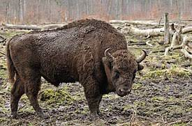
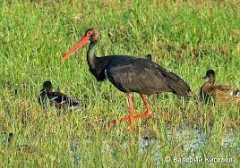

Спорт играет большую роль в жизни человека. Он укрепляет здоровье , воспитывает характер, делает человека сильным и выносливым, закаляет организм. Кроме того, мне кажется, занятия спортом поднимают настроение.Я считаю, что спортом заниматься необходимо каждому человеку. Спорт развивает физические данные людей. Человека, занимающегося спортом, сразу видно. Он отличается подтянутостью, красивой осанкой. Недаром говорят: «В здоровом теле – здоровый дух!»Люди, занимающиеся спортом, меньше болеют. Физические упражнения возвращают здоровье многим людям.
Спорт полезен не только для здоровья, но и ещё для души. Ведь это необыкновенный прилив энергии, которая заполняет каждую клетку организма и заставляет по-другому смотреть на привычные вещи и радоваться каждому новому дню. Тот, кто не занимается, спортом никогда не поймёт ту радость и приятную тяжесть в мышцах, которая возникает после тренировки и то желание тренироваться каждый день, которое подобно разве что жажде.Спорт приносит большую радость. Люди ходят в секции, посещают спортклубы, играют в спортивные игры, закаляются и общаются с новыми людьми. Спортивные командные игры приносят радость победы. Поездки в разные города и страны на соревнования – самая интересная сторона спорта.
Спорт воспитывает характер человека. Занятие спортом укрепляет силу воли, дисциплинирует людей. Ленивый человек не станет ежедневно рано вставать, чтобы делать пробежку, обливаться холодной водой. Только сильные духом люди способны дружить со спортом. На мой взгляд, слова из песни: «В хоккей играют настоящие мужчины, трус не играет в хоккей», – именно это и подтверждают.Нет ничего важнее здоровья человека, а чтобы быть здоровым, надо заниматься спортом. Это должен знать каждый! Недаром во всех дошкольных и школьных учреждениях и даже в вузах заложена программа физического воспитания детей и подростков. Я считаю, что девиз каждого человека должен быть таким: «Движение – это жизнь!»
| вид спорта | количество | |
| мужчин | женщин | |
| бег | 10% | 8,1% |
| плавание | 13% | 11,5% |
 Зубр — единственный дикий бык Европы, уцелевший до наших дней. Для большинства народов Кавказа зубр служил не только объектом охоты, но и олицетворял силы природы, имел традиционное культовое значение, ему поклонялись как одному из символов родной земли. Зубр — неотъемлемая часть экосистем лиственных лесов Кавказа, который формирует присущий региону ландшафт. Восстановление природных популяций зубра является одним из необходимых условий воссоздания естественных лесных массивов.Исчезновение зубра в природе было вызвано причинами антропогенного характера: уничтожением местообитаний (вырубка и выжигание лесов, преобразование лесных массивов в сельскохозяйственные угодья) и неограниченной охотой. Последние дикие популяции вида были уничтожены в начале ХХ века. Потребовалось около 70 лет разведения — сначала в зоопарках и питомниках, а потом и в природе — для того, чтобы увеличить численность мирового стада с 52 животных (1927) до 3418 особей (1993).
 Чёрный аист (Cicоniа nigrа) — редкая птица, относящаяся к семейству Аистовые и отряду Аистообразные. От других собратьев, эти пернатые отличаются очень оригинальным окрашиванием оперения.Стройная и красивая птица отличается стройными ногами, изящной шеей и длинным клювом. Клюв и ноги птицы имеют красный цвет. В области груди располагаются густые и взлохмаченные перышки, отдалённо напоминающие меховой воротник. Предположения о «немоте» чёрных аистов, обусловленной отсутствием сиринкса, является безосновательным, но этот вид намного молчаливее, чем белые аисты.Украшением глаз являются очертания красного цвета. Самки от самцов своим внешним видом практически не отличаются. Особенностью молодой птицы является очень характерное, серовато-зеленое очертание области вокруг глаз, а также несколько блеклое оперение. Взрослые черные аисты имеют оперение с лоском и пестротой. Линька происходит ежегодно, начинаясь в феврале и заканчиваясь с наступлением мая-июня.